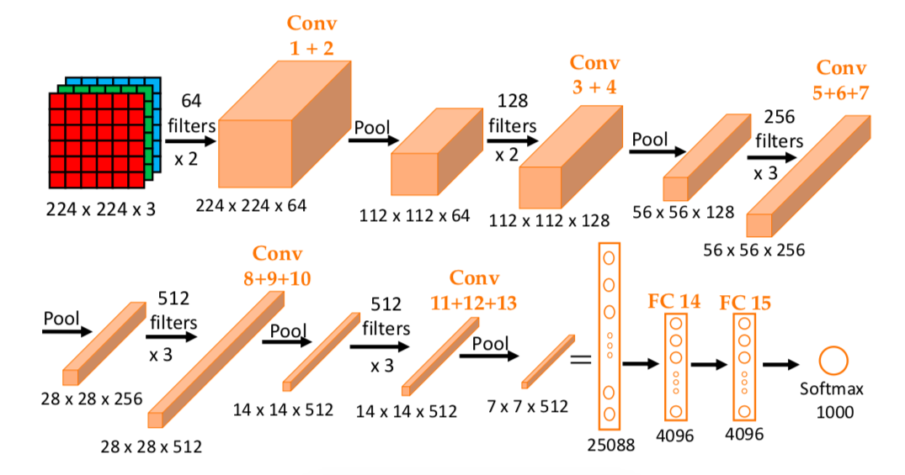
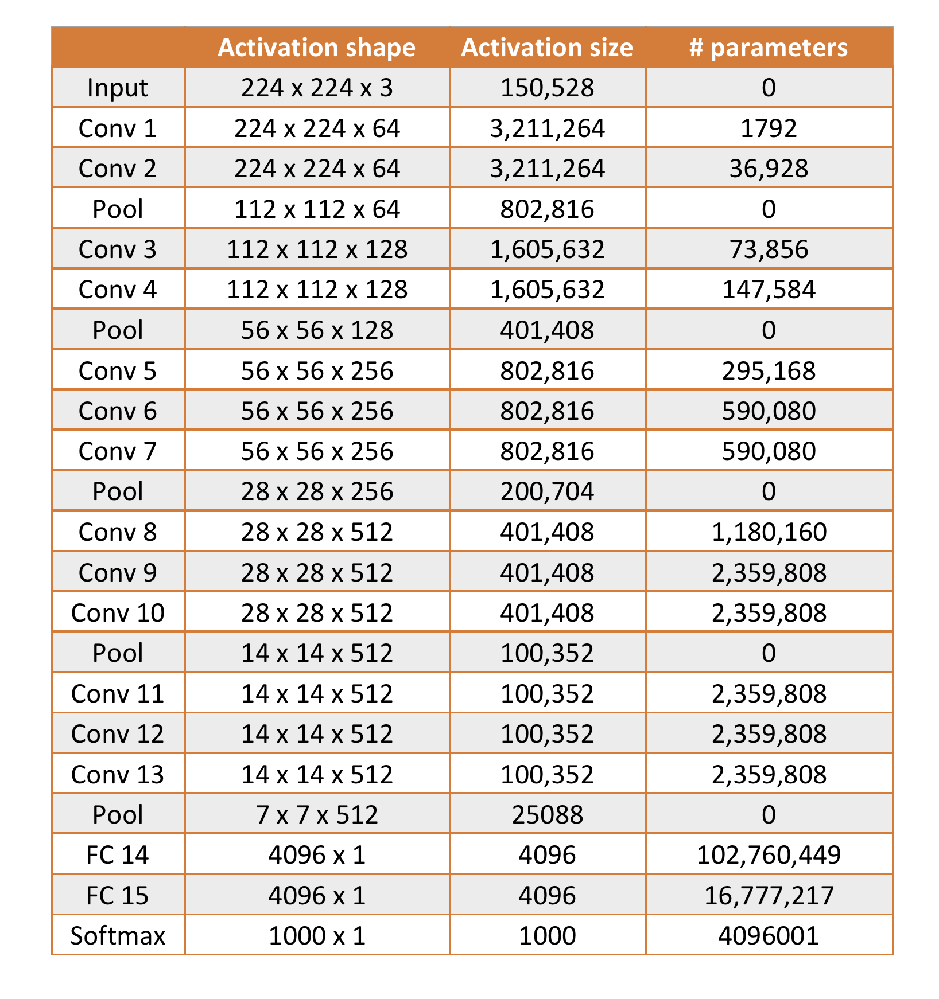

Source: original paper.
by Karen Simonyan and Andrew Zisserman (2015)
VGG stands for Visual Geometry Group,
a research group in the Department of Engineering Science at the University
of Oxford, and refers to the deep convolutional network (ConvNet) models either with
16 layers (VGG-16) or 19 layers (VGG-19). These models were shown to provide
excellent accuracy on ILSVRC
(ImageNet Large-Scale Visual Recognition Challenge)
classification and localization tasks.
The network consists of a stack of convolutional layers followed by three fully connected (FC)
layers with a final 1000-way softmax.
Compared to AlexNet in the
previous post, this network is deeper but
has a simpler architechture as illustrated below.
The same structure is used for all the
convolutional layers with filters of size \(3\times 3\), same convolution
(padding such that output and input sizes or resolutions are the same), and
a stride of 1. Similarly, for all pooling layers, max pooling was used with
\(2\times 2\) window and a stride of 2.
As the network gets deeper, the height and width go down by a factor of 2 while
the number of filters goes up by a factor of 2.
The simplicity and uniformity in construction are among the nice
features of the network.

Architechture of the VGG-16 ConvNet. All the convolutional
layers use same convolution \(3\times 3\) filters with stride \(s=1\). All pooling
layers use \(2\times 2\) max pooling with stride 2 \((f=2, s=2)\).
The activation shapes and sizes as well as the number of parameters for each layer
are tabulated below. The total number of parameters is calculated to be 138,348,355.
This is considered a very large net work even for current standard.

It appears to be standard practice as for this model the input images were also
\(224\times 224\times 3\), which was obtained by randomly cropping the rescaled
training images. Data augmentation was done as described by
Krizhevsky et al. in the AlexNet paper.
Also similar to the AlexNet paper, the authors normalized
the pixel values using the mean RGB value computed on the training set.
ReLU activation function was used to add non-linearity.
Note that according to the authors, Local Response Normalization, a technique used
by Alex Krizhevsky et al. in the AlexNet paper does not result in
performance improvement on the ILSVRC dataset. This is consistent with what Andrew Ng
mentioned in his course on CNNs.
Another interesting point from the paper is how the use of a stack of conv layers
with small size filters (without pooling in between) is more advantageous to
one conv layer with large size filters. In other words, the authors are in favor
of deeper networks with small convolution filters.
Supposedly, a stack of two \(3\times 3\) conv
layers is effectively equivalent to a single \(5\times 5\) conv layer, and a stack of
three \(3\times 3\) conv layers is effectively equivalent to a single \(7\times 7\)
conv layer. However, by having a stack of smaller conv layers, first, non-linearity
is added more often (after every layer), and second, the number of parameters
is much smaller resulting in a regularization effect.
Gradient descent with momentum was also used in training this model with a typical
value for the momentum parameter 0.9, weight decay 0.0005. Dropout regularization was used for
the first two fully connected layers with dropout ratio set to 0.5. The learning rate
was initialized to 0.01, and subsequently decreased by a factor of 10 when the validation
set accuracy stopped improving, which is the same procedure used in the AlexNet paper.
The network was trained over 370K iterations (74 epochs).
The mini-batch size was 256.
Detailed results on the ILSVRC datasets can be found on the paper. The network showed
very impressive performance, outperforming many models including GoogLeNet.